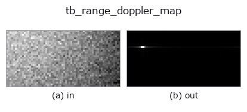

typed op• 資料種類:beatcube → image
• 呼叫:fullseye.apply(img, "tb_range_doppler_map", a=0.5, b=0.5)(2-D 的模型是一張圖 + 兩個純量旋鈕 a,b∈[0,1])

*圖為在 128×128 合成輸入上實際執行的輸出。左為輸入，右為輸出。點雲以俯視散點顯示(亮度 = z)，一維序列為折線，體資料為沿 z 的最大值投影，影片為中間影格，複數影像為振幅；無法成像的回傳值直接顯示數值。*
*旋鈕 a 不改變輸出(實測: 0.1 / 0.5 / 0.9 相同)。*
*旋鈕 b 不改變輸出(實測: 0.1 / 0.5 / 0.9 相同)。*
階段(前置運算子 → 本運算子，由左至右):
▸ tb_range_doppler_map: stages (docs site)
換別的影像(合成場景 / 照片 / 硬幣。上排為輸入，下排為對應輸出。旋鈕取預設):
▸ tb_range_doppler_map: other inputs (docs site)
拍頻立方體的二維 FFT -> `(n_doppler, n_range)` 幅度圖。
> 以下的詳細說明為原文 —— 摘要與標題已翻譯。
Fast time transforms to range (last axis, not shifted: bin `j` is
`j * c*f_s/(2*S*N_s)` metres, and a physical range is always positive so
the whole `[0, f_s)` band is used). Slow time transforms to velocity
(middle axis, `fftshift`ed so the map is centred on zero velocity: bin
`i is (i - N_c//2) * lambda/(2*N_c*T_c)` metres per second, positive =
receding).
The antenna axis is collapsed by *combine*: `"incoherent"` (default) is the
mean of the magnitudes, which is angle independent and therefore the
right default for detection; `"coherent"` is the magnitude of the mean,
i.e. a beam pointed at boresight, which attenuates an off-boresight target on
purpose. `antenna=k uses element k` alone. For a single-element cube
all three agree exactly.
`normalize=True divides by N_c * N_s`, so a bin-centred target of
amplitude `a peaks at exactly a` (measured: 1.0 for a unit target,
absolute error 0.0). The default `False` keeps the raw FFT magnitude.
No window is applied — compose :func:fmcw_window_apply first if you want
one. The output is a plain 2-D float64 array, so every 2-D operator in
Fullseye (threshold, morphology, labelling, blob measurement — the pieces a
CFAR detector is made of) applies to it directly.
Raises `ValueError`: a real-valued cube (it would put a mirror ghost of
every target at a fabricated range), fewer than 2 chirps or 2 samples, an
out-of-range *antenna* index, an unknown *combine*, a cube over the element
cap, an FFT that overflows to NaN, or NaN/Inf on the way in.
Typed bridge of the rangedoppler op `range_doppler_map into the 2-D evolution registry: the same implementation, called under the op(v, a, b) convention. This op has no tunable parameter; a and b` are unused.
• 範例資料目錄(下載 URL / 授權) —— 2-D 用 skimage.data(BSD/公有領域)加合成圖,3-D 給出真實資料源(Stanford/PDS 等)的下載 URL。
• 運算子來歷與參考文獻 —— 該運算子族所依據的研究/方法出處。
下面的程式已確認可以執行(與圖相同的輸入)。在 Studio 說明中，此區塊會變成按鈕，可當場載入並執行。
img_to_beatcube 0.50 0.50 tb_range_doppler_map 0.50 0.50
▸ Load this pipeline · Load & run
下面的範例呼叫的是底層帳本運算子 range_doppler_map。此橋接運算子只是把同一實作適配為 fn(v, a, b) 慣例，行為完全相同(只是呼叫形式不同)。
• fmcw_range_doppler — py -3.11 examples/fmcw_range_doppler.py
image 作為輸入)identity · gaussian · mean_box · bilateral · unsharp · median · min_filter · max_filter
typed)tb_points_to_voxel · tb_estimate_point_normals · tb_iss_keypoints · tb_project_points · tb_render_point_depth · tb_statistical_outlier_removal · tb_radius_outlier_removal · tb_voxel_grid_downsample
*Provenance: ops.py — 2D 運算子登記表。本條目由 tools/opdocs.py md 自動產生(請勿手動編輯)。*
© 2026 Kazufumi Furuse — Fullseye operator documentation. Licensed under Apache-2.0.
{kind=link}
{kind=link}